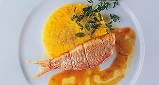

Salmonete relleno de espinacas y piñones. Salsa de foie marino.
"Un mar y montaña comprimido, el sabor marino del salmonete y a tierra y bosque de espinacas y piñones"

| Salmonete de roca 150gr./200gr. | 4 un. |
 |
|
| Espinacas baby | 200 gr. |
| Piñones | 40 gr. |
| Jamón serrano | 40 gr. |
| Aceite de oliva | 20 ml. |
| Canela en polvo | 1/4 cc. |
|
|
| Chalotas | 1 un. |
| Concentrado de tomate | 1/2 cs. |
| Foie de los salmonetes | 2 un. |
| Piñones | 20 gr. |
| Avellanas | 20 gr. |
| Diente de ajo | 1 un. |
| Caldo de pescadoc | 100 ml. |
| Mantequilla | 25 gr. |
|
|
| Panceta Ibérica | 8 lonchas |
| Vino blanco o Jerez seco | 40 ml. |
| Aceite de oliva | 40 ml. |
- Limpiar y escamar los salmonetes reservando su hígado.
- Retirar la cabeza y la espina central, dejando unido los filetes por la cola.
- Reservar en la nevera.
- Colocar una sartén grande a fuego medio con la mitad del aceite de oliva. Calentar.
- Añádir las espinacas, remover, tapar la sartén y subir el fuego. Cocer 2'.
- Escurrir las espinacas rehogadas con la ayuda de un colador.
- En la misma sartén y con la otra mitad del aceite, dorar ligeramente los piñones y el jamón.
- Añádir las espinacas, rehogar 1', rectificar de sal y aromáticas con una punta de canela.
- Reservar en el frigo.
- En otra sartén sofreír con la mantequilla, las chalotas, ajos, avellanas, piñones y los foies de salmonete.
- Una vez acabado el sofrito 5', retírar y colocarlo en el vaso del túrmix.
- Agregar en el vaso el concentrado de tomate.
- Calentar en un cazo el caldo de pescado, añadirlo al vaso del túrmix y triturar todo el contenido.
- Volver a poner en el cazo y reservar al calor.
- Salar ligeramente el salmonete por el exterior.
- Abrir el salmonete y rellenar con las espinacas.
- Envolver lo salmonetes con las lonchas de panceta ibérica con el fin de que no se abran los salmonetes durante la cocción.
- Precalentar el horno a 220º (arriba y abajo).
- Colocar la salsa a reducir a fuego lento durante unos minutos, rectificar de sal y mantener en caliente. Acabado/Presentación
- Colocar los salmonetes sobre una placa de horno forrada con silpat o papel para horno o aluminio.
- Añádir sobre los salmonetes un toque de Jeréz seco y aceite de oliva.
- Introducir en el horno y cocer en el horno 2'/3' (dependiendo del tamaño).
- Colocar sobre plato y mojar con la salsa caliente, Añádir un chorro de aceite de oliva por encima
- Servir de inmediato.